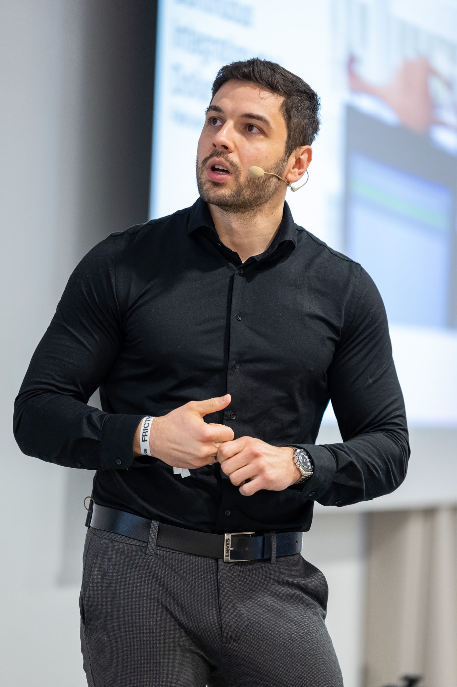

Engineering leadership
Building healthy, high-performing teams through career development, clear feedback, and thoughtful organisation design.
Engineering leader · Mobile specialist
I am Petar Ljubic, an engineering leader who combines deep Android and cross-platform expertise with a people-first approach to delivery.

Düsseldorf, Germany
01 — About
For more than a decade, I have built mobile products and the teams behind them. I believe exceptional outcomes come from psychological safety, transparent feedback, and giving people room to learn by doing.
Today, I lead cross-platform engineering at trivago in Düsseldorf. My work spans Android, Kotlin Multiplatform, architecture, engineering practice, and the design of high-trust teams.
More on LinkedIn02 — Expertise
Building healthy, high-performing teams through career development, clear feedback, and thoughtful organisation design.
End-to-end Android expertise, Kotlin Multiplatform, Android Automotive, Flutter, and pragmatic product architecture.
Pairing, mob programming, TDD, and trunk-based development applied to make delivery more predictable and effective.
Practical workflows that help teams use AI tools intentionally while keeping collaboration, quality, and ownership high.
03 — Selected work
Completed a successful end-to-end migration of trivago's mobile apps to Kotlin Multiplatform in weeks. The project brought Jetpack Compose UI from Android together with the iOS app's Redux business logic, producing a new shared codebase with 95% shared UI. With frontier AI models supporting the migration, the team completed nearly 700 tasks in 10 weeks.
Led Android Auto development for Bosch and built Android Automotive products across the Volkswagen Group, including work for Porsche.
From shipping 75+ apps and games with millions of downloads to leading five cross-functional teams of 48 people, improving engagement and revenue through a culture of feedback and ownership.
04 — Speaking
I speak about mobile architecture, platform teams, and the systems that help engineers do their best work.
05 — Contact